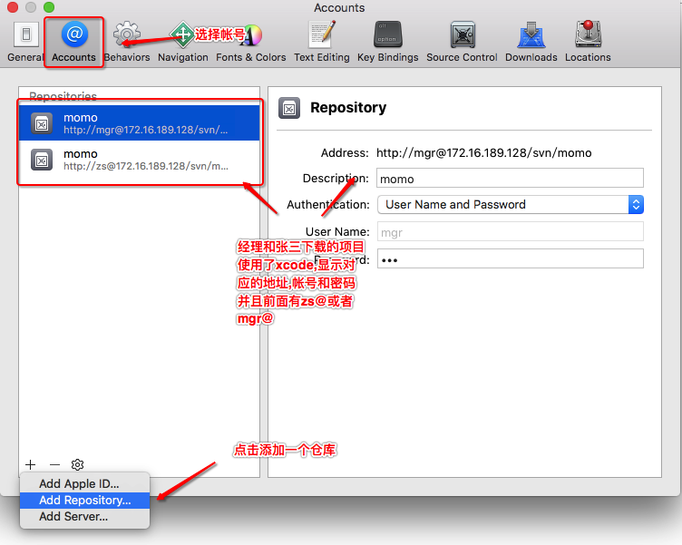
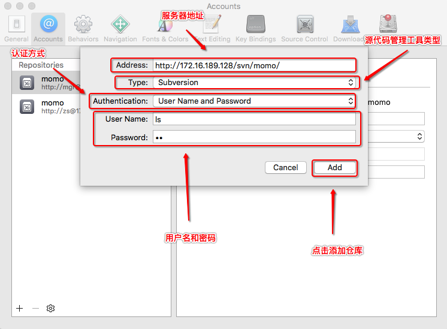
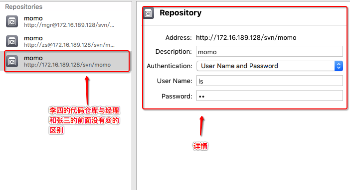
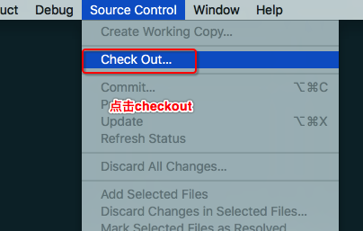
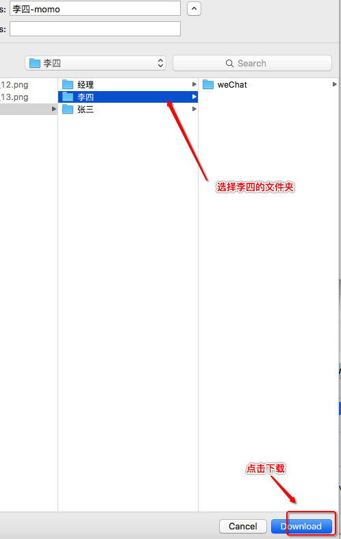

Xcode的checkout和SVN使用技巧
- 一.李四使用xcode下载代码
1.来到xcode的偏好设置
2.选择帐号,然后点击加号选择增加一个仓库
3.配置基本信息后添加代码仓库
4.如果没有报错,看到下面的界面说明添加成功
5.点击source control - checkout6.选择李四的远程代码仓库点击next
7.下载到李四的文件夹下 - 二.公司开发技巧(在工作中使用svn尽量避免冲突)
1.尽可能在在修改文件之前先update 2.写一些代码立即提交到服务器,时时保持与服务器同步 3.尽量在下班前半小时提交所有的代码,留有半小时时间一旦产生冲突可以一起解决冲突 - 三.总结
checkout的方式 1.使用命令行 svn checkout 服务器地址 帐号和密码 2.使用图形化界面工具点击checkout按钮 3.使用xcode,先在偏好->帐号中配置远程地址再checkout到本地